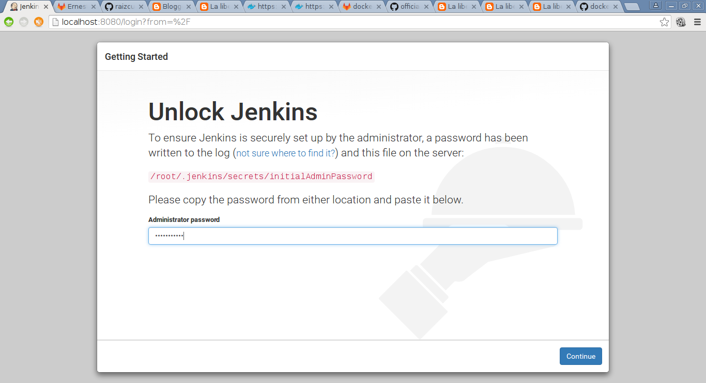
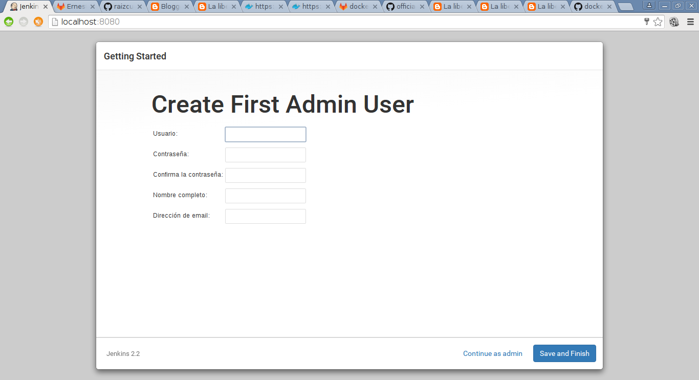
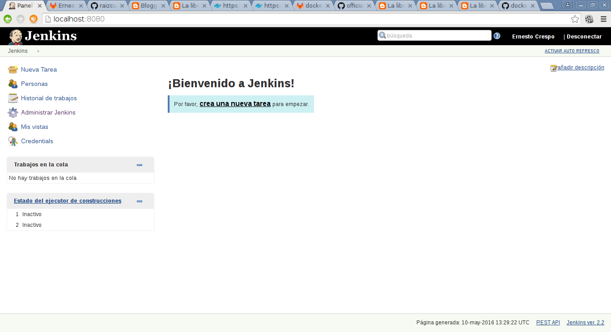

Tal como se hizo en el artículo de gitlab ahora se procede a explicar la instalación de Jenkins, la diferencia es que aparte del procedimiento vía una imagen de Docker, se creará una imagen propia de Jenkins.
Los artículos anteriores sobre Docker son:
-
Iniciando Django con docker usando docker-compose con postgresql como microservicio.
-
Crear un entorno de Integración y Despligue continue con Docker para node.js.
-
Ejecutar una prueba de unittest en Python con un contenedor Docker.
-
Montar una Plataforma como servicio (PaaS) con Dokku (docker).
Este artículo se basa en una parte en el procedimiento del repositorio oficial de Jenkins en Docker Hub.
Basicamente para instalar jenkins de la imagen Docker oficial se ejecuta:
docker run -p 8080:8080 -p 50000:50000 jenkins
Pero en este caso se va a usar un archivo Dockerfile donde se instalará maven2, openjdk, docker, ant y jenkins. A fin de tener un soporte suficiente para los plugins que trae jenkins.
El archivo Dockerfile es el siguiente:
FROM debian
MAINTAINER Ernesto Crespo <ecrespo@gmail.com>
RUN apt-get update
RUN apt-get install -y apt-transport-https
RUN apt-get install -y git
RUN apt-get install -y openssh-server openssh-client
RUN apt-get install -y openjdk-7-jdk maven2 ant
RUN apt-key adv --keyserver hkp://p80.pool.sks-keyservers.net:80 --recv-keys 58118E89F3A912897C070ADBF76221572C52609D
RUN sh -c 'echo "deb https://apt.dockerproject.org/repo debian-jessie main" > /etc/apt/sources.list.d/docker.list'
RUN apt-get install -y wget
RUN wget -q -O - https://jenkins-ci.org/debian/jenkins-ci.org.key | apt-key add -
RUN sh -c 'echo deb http://pkg.jenkins-ci.org/debian binary/ > /etc/apt/sources.list.d/jenkins.list'
RUN apt-get update
RUN apt-get install -y docker-engine
RUN apt-get install -y jenkins
RUN apt-get install -y vim less locate
RUN sh -c 'service docker start'
RUN sh -c 'service jenkins start'
RUN apt-get clean
EXPOSE 8080 50000 22
ENTRYPOINT ["java","-jar","/usr/share/jenkins/jenkins.war"]
CMD [""]
Como se ve, se está usando una imagen Debian y se le instala lo necesario para tener jenkins con algunas herramientas adicionales como Docker, maven2, ant y jenkins.
Para construir la imagen se ejecuta:
docker build -t docker-jenkins .
Esto genera la imagen como se ve a continuación:
docker images
REPOSITORY TAG IMAGE ID CREATED SIZE
docker-jenkins latest 844985a7b6ad 54 minutes ago 855.3 MB
Para crear el contenedor se ejecuta:
docker run -p 8080:8080 -p 50000:50000 -p 8022:22 -P -d docker-jenkins
Esto genera la siguiente figura abriendo el navegador en localhost:8080:

Acá se ejecuta docker exec a fin de ver el contenido del archivo que contiene la llave para autenticar el jenkins:
docker exec -ti naughty_darwin /bin/bash
Se busca el archivo dentro del contenedor:
cd /root/.jenkins/secrets/
cat initialAdminPassword
4280c91df94a43308a731c008c6abb3d
Ya con eso se pregunta si se quiere seleccionar los plugins o si se instalan los recomendados:

Luego se muestra la ventana del proceso de instalación de plugins:
Al terminar este proceso se pide crear un usuario administrador:

Luego de esto ya se muestra la página de que se terminó el proceso de configuración:

A continuación se muestra la página inicial de Jenkins:

Para terminar se instalarán unos plugins adicionales necesarios para próximo artículo (git, gitlab y docker):
El archivo Dockerfile utilizado para el artículo se encuentra en github en el siguiente enlace.
Para terminar se suben los cambios a docker hub:
Primero se hace login en docker hub:
docker login
Login with your Docker ID to push and pull images from Docker Hub. If you don't have a Docker ID, head over to https://hub.docker.com to create one.
Username: ecrespo
Password:
Login Succeeded
Luego se hace commit:
docker commit 91594bea7711 ecrespo/docker-jenkins
sha256:561e411227e6c0d5e74ef85f6d533c44cb1e66b68ef2da6eec66d228de173fc2
Se hace push:
docker push ecrespo/docker-jenkins
A continuación se muestra una imagen del sitio ecrespo/jenkins de docker hub:

La configuración del Jenkins con Gitlab se tocará en el siguiente artículo.
¡Haz tu donativo! Si te gustó el artículo puedes realizar un donativo con Bitcoin (BTC) usando la billetera digital de tu preferencia a la siguiente dirección: 17MtNybhdkA9GV3UNS6BTwPcuhjXoPrSzV
O Escaneando el código QR desde la billetera:

Comments !